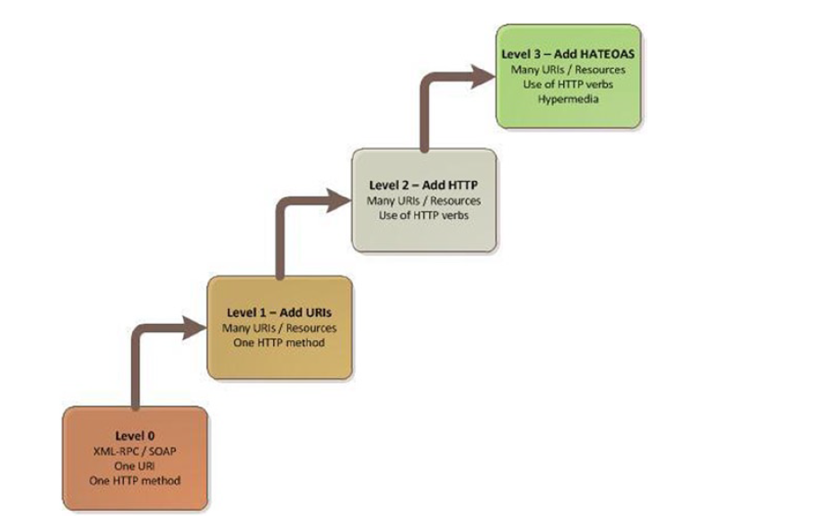
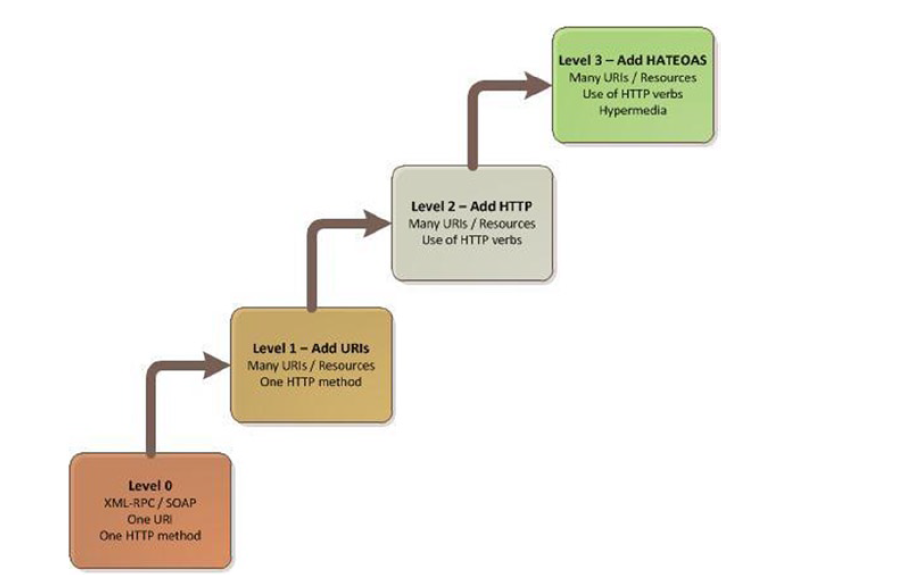

Den spennende verden av .NET, API og hjelpeverktøy
Men hvorfor skal du bry deg?
Ting du kan hive på CN'en etter denne presentasjonen:
Swagger
JMeter
Swagger
JMeter
Hva er egentlig et REST API?
En arkitetkur basert på HTTP requests med visse grunnleggende krav:
Level 0: Kun en HTTP metode, en URI
Level 1: Flere URI. feks. api/books og api/authors
Level 2: Flere HTTP verb. POST, PUT, GET, DELETE.
Level 3:Bruk av HATEOS, dvs returner tilgjengelige operasjoner.
En arkitetkur basert på HTTP requests med visse grunnleggende krav:
Level 0: Kun en HTTP metode, en URI
Level 1: Flere URI. feks. api/books og api/authors
Level 2: Flere HTTP verb. POST, PUT, GET, DELETE.
Level 3:Bruk av HATEOS, dvs returner tilgjengelige operasjoner.
En sykt spennende slide


Swagger: Ett browser "plug-in" for å teste ett API
JMeter: Ett testingsverktøy, kan f.eks brukes til stresstesting
JMeter: Ett testingsverktøy, kan f.eks brukes til stresstesting
.NET REST API som konsumeres av en nettside med hjelp av Anlaugular
Questions have you?